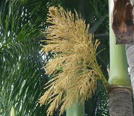
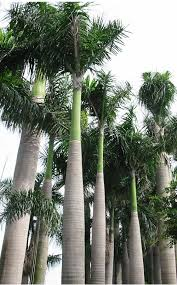
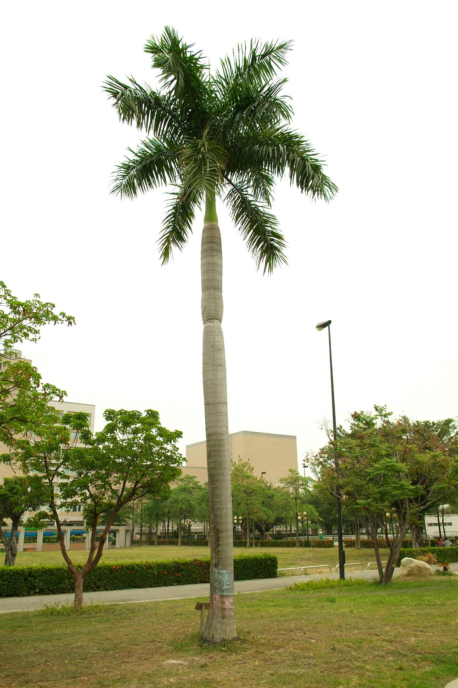

埔墘國小生態園導覽系統
埔墘國小生態園導覽系統
埔墘國小生態園導覽系統
大王椰子---埔墘的巨人們
科別:棕橍櫚科
大王椰子是海地的國花，台灣早在1898年就有人引進栽培，大王椰子生性喜高溫多濕耐瘠，所以很適應台灣的氣候。
大王椰子，由於樹形高大，姿態雄偉挺立，是一般學校最常見的的景觀校樹。鼎鼎大名的「椰林大道」一向是台灣大學的象徵，也是所有台大人永遠的驕傲，更是莘莘學子們嚮往追求的目標。因為大王椰子，又稱文筆樹，有著期望學子能夠學問淵博，並有豐富的想像力，而且擁有精采的文筆，所以廣受大家的歡迎！埔墘國小就有三排大王椰子樹呢！
大王椰子是椰子類植物中最為高大的一種，高聳挺拔的樹幹上有一節一節的環狀紋路，是葉片掉落後在莖上留下的明顯環紋。大王椰子之葉子，葉柄下方擁抱樹幹的那一大片葉鞘，一旦年華老去，總會「轟」的一聲掉下來，嚇壞不少路過的人，而這椰葉就變成了孩童最喜愛的節能小拉車了。
 充電區
充電區
●學名：Roystonea regia
●別名:王棕、假檳榔
●科別：棕櫚科
●屬性：常綠喬木
●花：花為白色。雄花較長約6~7公分，三點較雌花為大。肉穗花序分枝多而短，長40－60厘米。花期約10-5月，為蜂類的蜜源食物。
●葉子：大王椰子四季常綠，葉子為羽狀複葉，葉鞘綠色，表面光滑，最長可達3米，螺旋形排列於樹幹頂部，形成外形略為凌亂的樹冠。
●樹幹：與其他棕櫚科植物同樣為高大不分枝的喬木，最高可達30米，樹幹高大而且表面光滑。樹幹頂部近葉處為綠色，其餘部份呈淺灰色，中間部份特別肥大。
●果：核果，卵圓形，比檳榔小，種子卵形，長約1.2cm。
●產地：古巴、雅買加、巴拿馬。
圖片
  
參考資料:
Yahoo奇摩知識+(https://tw.knowledge.yahoo.com/question/question?qid=1306031212074)
Yahoo奇摩知識+(https://tw.knowledge.yahoo.com/question/question?qid=1610080908627)
意見回饋
http://goo.gl/forms/TYAn8vnVM5
建議使用Google Chrome瀏覽